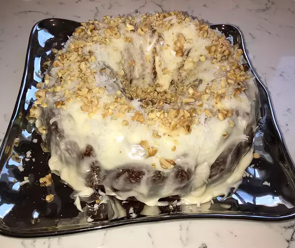

Plum Cake

Description
A pineapple cake with cream cheese frosting that's easy to make.
INGREDIENTS
Cake
- 2 cups all-purpose flour
- 2 cups white sugar
- 2 teaspoons baking soda
- 2 large eggs
- 1 (20 ounce) can crushed pineapple with juice
- 1 teaspoon vanilla extract
Frosting
- 1 (8 ounce) package cream cheese
- ½ cup unsalted butter, softened
- 1 ½ cups confectioners' sugar
- 1 teaspoon vanilla extract
RECIPE
- Preheat the oven to 350 degrees F (175 degrees C). Grease a 9x13-baking dish.
- Mix together flour, white sugar, and baking soda for cake in a large bowl and make a well in the center. Add eggs, crushed pineapple with juice, and vanilla; mix until well-combined. Pour into the prepared baking dish.
- Bake in the preheated oven until a toothpick inserted into cake comes out clean, about 45 minutes.
- Meanwhile, combine cream cheese and butter for frosting in a mixing bowl; beat until smooth. Add confectioners' sugar and vanilla; beat until creamy.
- Spread frosting on warm cake.
Back to the Recipes